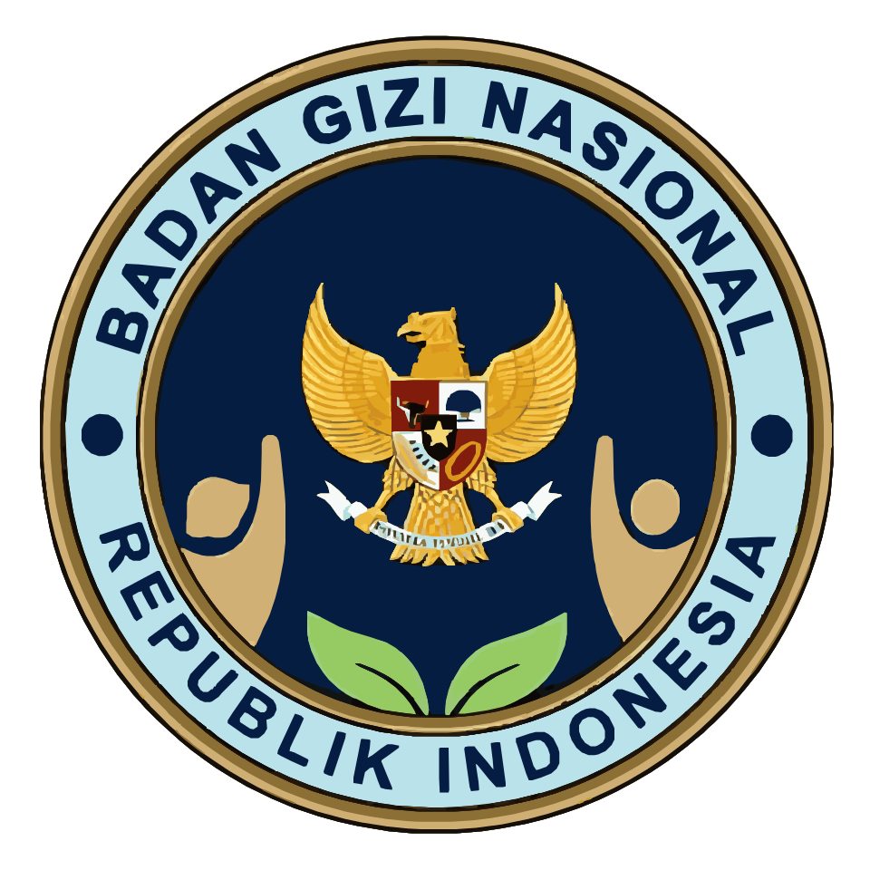
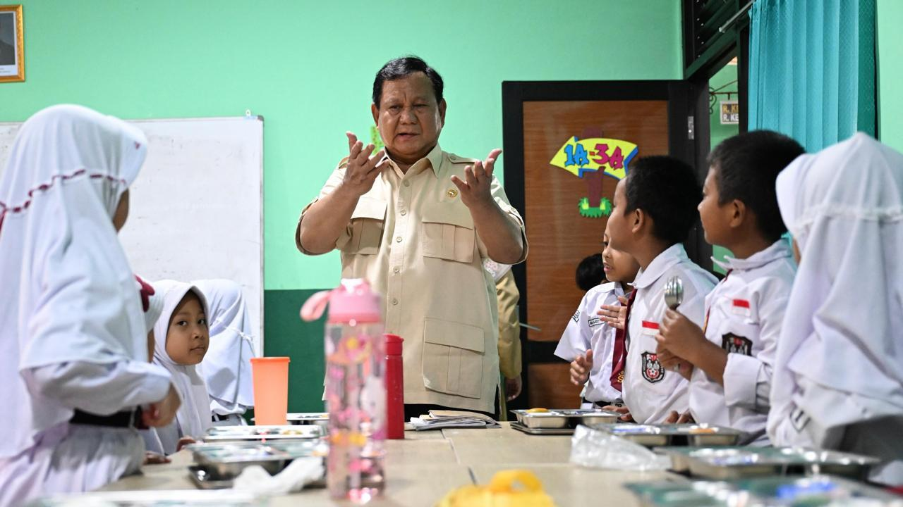

My Bini Gweh (MBG)
Gizi Hari Ini,
Generasi Kuat Esok Hari
MBG Insight menyajikan informasi Program Makan Bergizi Gratis secara ringkas, visual, dan mudah dipahami.
Website ini membantu pengguna
mengenal tujuan, sasaran, alur layanan, peran SPPG, dan dampak MBG bagi
kesehatan serta pendidikan
Disclaimer: Website ini merupakan media edukasi dan bukan kanal resmi pemerintah. Informasi yang ditampilkan dapat berubah dan perlu diverifikasi melalui sumber resmi terkait
Apa Itu Program MBG?
Program Makan Bergizi Gratis atau MBG adalah program pemenuhan gizi nasional yang ditujukan untuk mendukung kesehatan, tumbuh kembang, dan kesiapan belajar penerima manfaat. Program ini dapat dipahami sebagai bagian dari investasi jangka panjang dalam peningkatan kualitas sumber daya manusia Indonesia
-
Pemenuhan Gizi
Mendukung asupan makanan bergizi bagi kelompok sasaran prioritas.
-
Dukungan Pendidikan
Gizi yang baik membantu anak lebih siap mengikuti proses belajar.
-
Investasi SDM
Generasi yang sehat menjadi salah satu fondasi penting bagi pembangunan Indonesia.
Sasaran Penerima Manfaat
Program MBG diarahkan untuk mendukung kelompok sasaran yang membutuhkan pemenuhan gizi, terutama pada fase penting pertumbuhan, pendidikan, dan kesehatan keluarga.
| Peserta Didik | Siswa SD, SMP, SMA, atau sederajat yang membutuhkan dukungan gizi untuk menunjang aktivitas belajar. |
| Santri | Peserta didik di lingkungan pesantren yang membutuhkan dukungan gizi dalam kegiatan pendidikan keagamaan. |
| Anak Usia Dini dan Balita | Kelompok usia awal yang berada pada masa penting tumbuh kembang. |
| Ibu Hamil | Mendukung kebutuhan gizi ibu dan janin selama masa kehamilan. |
| Ibu Menyusui | Mendukung kebutuhan nutrisi ibu dan bayi pada fase awal kehidupan anak. |
Bagaimana Program MBG Berjalan?
01. Identifikasi Sasaran
Menentukan kelompok penerima manfaat berdasarkan data yang relevan.
02. Perencanaan Menu
Menyusun menu berdasarkan kebutuhan gizi, ketersediaan bahan, dan standar layanan.
03. Pengadaan Bahan Pangan
Menyiapkan bahan pangan yang layak, aman, dan sesuai standar kualitas.
04. Pengolahan di SPPG
Makanan dikelola melalui satuan layanan yang bertanggung jawab terhadap proses pengolahan.
05. Distribusi
Makanan didistribusikan kepada kelompok sasaran sesuai jadwal dan mekanisme layanan.
06. Edukasi dan Pemantauan
Pelaksanaan program perlu disertai edukasi gizi, evaluasi, dan perbaikan berkelanjutan.
SPPG sebagai Titik Layanan Pemenuhan Gizi
SPPG atau Satuan Pelayanan Pemenuhan Gizi adalah titik layanan yang membantu menyiapkan dan menyalurkan makanan bergizi kepada penerima manfaat. Di dalamnya terdapat proses pengadaan bahan, pengolahan makanan, distribusi, serta evaluasi layanan.
Bahan Pangan
Bahan pangan disiapkan sesuai kebutuhan layanan dan standar kualitas.
Pengolahan
Proses pengolahan makanan perlu menjaga kebersihan, keamanan, dan kualitas.
Distribusi
Makanan disalurkan kepada penerima manfaat sesuai jadwal dan mekanisme yang ditentukan.
Pengawasan
Pelaksanaan layanan perlu dipantau agar dapat dievaluasi dan diperbaiki secara berkala.
Lebih dari Sekadar Makan Gratis
MBG tidak hanya berkaitan dengan makanan, tetapi juga dengan kesehatan, pendidikan, keluarga, dan ekonomi lokal. Namun, manfaat program tetap bergantung pada kualitas pelaksanaan, ketepatan sasaran, keamanan pangan, dan evaluasi yang berkelanjutan.
Kesehatan Anak
Asupan bergizi membantu mendukung pertumbuhan dan kondisi kesehatan anak.
Konsentrasi Belajar
Anak yang mendapat asupan baik lebih siap mengikuti kegiatan belajar.
Dukungan Keluarga
Program gizi dapat membantu meringankan sebagian kebutuhan harian keluarga.
Pencegahan Masalah Gizi
Intervensi gizi dapat mendukung upaya penurunan masalah gizi.
Ekonomi Lokal
Kebutuhan bahan pangan dan layanan dapur dapat membuka ruang keterlibatan pelaku lokal.
Investasi SDM
Kesehatan generasi muda menjadi bagian penting dari pembangunan nasional.
Dokumentasi Pelaksanaan MBG
Bagian ini menampilkan cuplikan visual kegiatan Program Makan Bergizi Gratis, mulai dari proses layanan, distribusi, hingga pelaksanaan program di lapangan.

Pelaksanaan MBG
Dokumentasi pelaksanaan Program Makan Bergizi Gratis di lapangan.
Distribusi Makanan
Distribusi makanan kepada penerima manfaat.
Kegiatan Layanan
Kegiatan layanan makanan bergizi di satuan pelayanan.
Persiapan Makanan
Proses persiapan makanan bergizi sebelum didistribusikan.
Belajar Gizi dengan Cara Sederhana
Makanan bergizi tidak hanya soal kenyang, tetapi juga keseimbangan nutrisi. Bagian ini membantu pengguna memahami komponen dasar makanan bergizi secara sederhana.
Karbohidrat
Karbohidrat merupakan sumber energi utama untuk aktivitas belajar dan kegiatan harian. Contohnya nasi, jagung, kentang, ubi, atau pangan lokal lain.
Protein
Protein membantu pertumbuhan, perbaikan jaringan tubuh, dan menjaga daya tahan tubuh. Contohnya telur, ikan, ayam, tempe, tahu, atau kacang-kacangan.
Sayur
Sayur mengandung vitamin, mineral, dan serat yang membantu menjaga kesehatan tubuh serta mendukung sistem pencernaan.
Buah
Buah menjadi sumber vitamin, mineral, dan serat alami yang membantu melengkapi kebutuhan gizi harian.
Air Mineral
Air mineral membantu menjaga cairan tubuh agar tetap seimbang sehingga tubuh lebih siap beraktivitas dan berkonsentrasi.
Aman, Terukur, dan Bertanggung Jawab
Program berskala nasional membutuhkan tata kelola yang jelas agar aman, tepat sasaran, dan dapat dievaluasi secara berkala.
Keamanan Pangan
Makanan perlu dikelola dengan bersih dan aman.
Ketepatan Sasaran
Distribusi harus mengikuti data penerima manfaat yang jelas.
Evaluasi
Program perlu dipantau agar pelaksanaannya terus membaik.
Pertanyaan Umum
Beberapa pertanyaan dasar seputar Program Makan Bergizi Gratis dan website ini.
Apa itu MBG?
MBG adalah program pemenuhan gizi nasional untuk mendukung kesehatan dan pendidikan.
Siapa sasaran penerima MBG?
Sasarannya mencakup peserta didik, santri, anak usia dini, ibu hamil, dan ibu menyusui.
Apa itu SPPG?
SPPG adalah satuan layanan yang membantu menyiapkan dan menyalurkan makanan bergizi.
Apakah website ini resmi?
Tidak. Website ini dibuat sebagai media edukatif dan proyek frontend HTML, CSS, dan JavaScript.
Apakah datanya real-time?
Tidak. Informasi di website ini bersifat statis dan perlu diverifikasi kembali melalui sumber resmi.